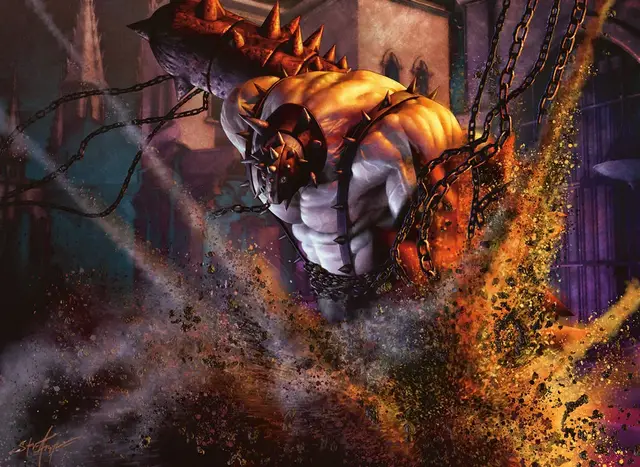

Великан кровобой
Bloodfray Giant
Огромный Великан, нейтрально-злой

Класс Доспеха 14 (природный доспех)
Хиты 103 (9к12 + 45)
Скорость 40 футов
| мод | спас | ||
|---|---|---|---|
| СИЛ | 23 | +6 | +9 |
| ЛОВ | 9 | −1 | −1 |
| ТЕЛ | 20 | +5 | +8 |
| мод | спас | ||
|---|---|---|---|
| ИНТ | 7 | −2 | −2 |
| МДР | 8 | −1 | +2 |
| ХАР | 9 | −1 | −1 |
Навыки Атлетика +9, Восприятие +2
Чувства пассивное Восприятие 12
Языки Великаний
Опасность 6 (2300 опыта)
Бонус мастерства +3
Действия
Цепь. . Рукопашная атака оружием: +9 к попаданию, досягаемость 20 фт., одна цель. Попадание: 16 (3к6 + 6) дробящего урона. Если цель — существо, оно схвачено (Сл высвобождения 17). Пока захват не закончится, цель опутанна, и великан не может использовать эту атаку ни на ком другом.
Камень. . Дальнобойная атака оружием: +9 к попаданию, дистанция 60/240 фт., одна цель. Попадание: 16 (3к6 + 6) дробящего урона.
Реакции
Яростная защита. После того, как существо, которое видит великан, получает урон от врага в пределах 20 футов от великана, великан совершает атаку Цепью против этого врага.
Описание
Великаны в Культе Ракдоса действуют как силовики, вышибалы, а иногда даже выполняют роль опор, которые удерживают мобильные платформы, служашие сценами для представлений Ракдосов. Как и другие члены культа, великаны трепещут от жестокости этих шоу. Хотя они могут казаться очарованными ужасом, разворачивающимся на сцене, они быстро и жестоко реагируют на любое вмешательство в представления.
Великаны
Великаны используют свои огромные размеры и силу, чтобы продвигать дело не менее чем четырех гильдий. В Легионе Боросов и Синдикате Орзов они хитрые солдаты. Великаны Культа Ракдоса и Кланов Груулов не менее эффективны, но им не хватает дисциплины.